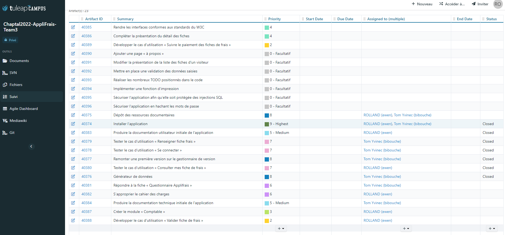
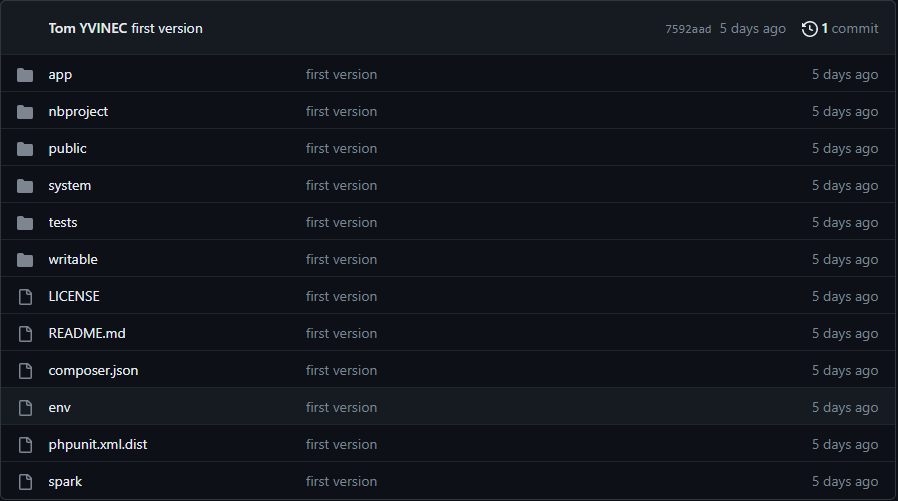
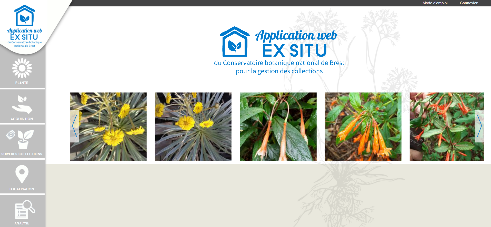
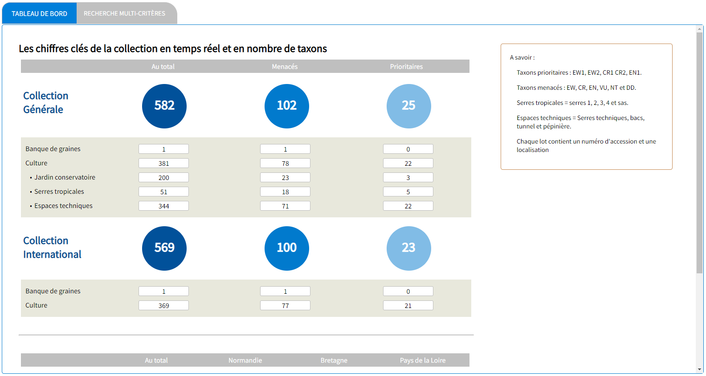
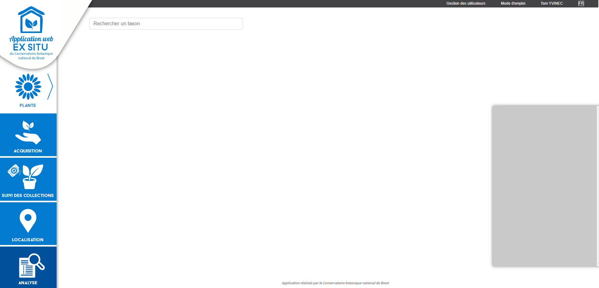
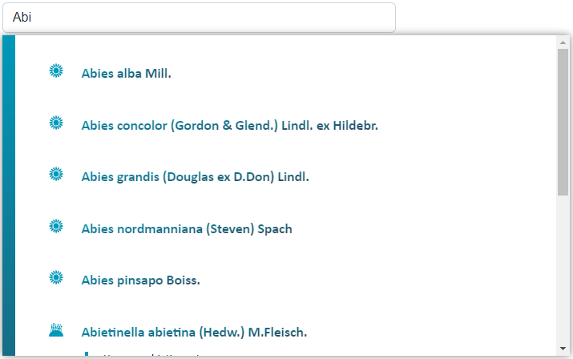
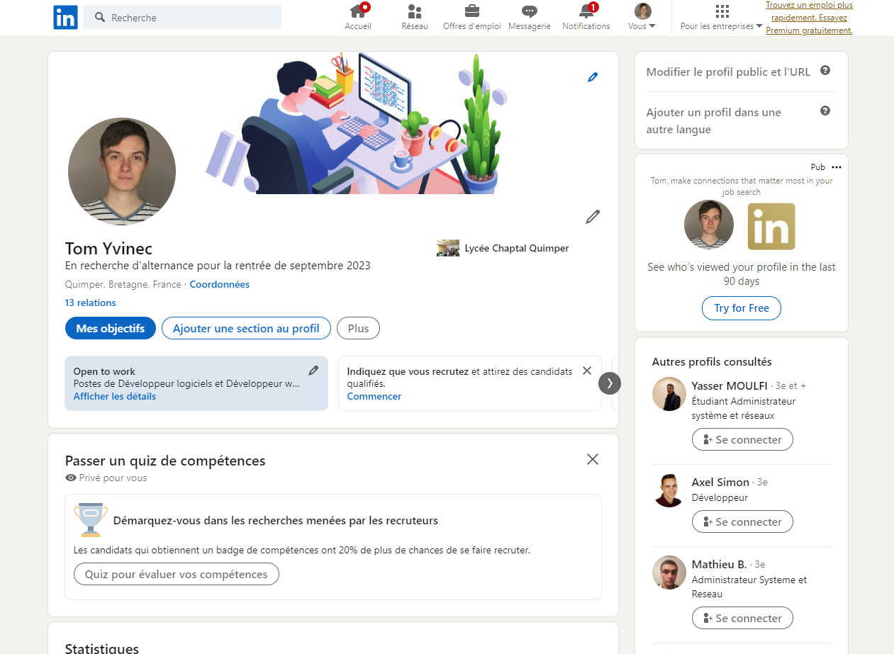

Projet Applifrais :
Le projet Applifrais était un projet effectué au cours de mon BTS SIO, il mettait en oeuvre une application PHP avec le framework CodeIgniter.
Il permet à des utilisateurs d'effectuer des fiches de frais et à des comptables de valider ces fiches.
Grâce à ce projet j'ai découvert la méthode agile qui consiste à assigner des tâches et d'afficher leur état pour pouvoir suivre plus efficacement l'avancement d'un projet.
Nous pouvons voir ici présent :
-L'indice de priorité sur les tâches qui permet de montrer le chemin à prendre pour avancer dans le projet.
-La partie Assigned to qui définit le responsable de la tâche.
-Le statut de la tâche qui permet de voir quelles sont les tâches terminés.
Cet activité m'a permis de valider la compétence suivante : Travailler en mode projet (Planifier les activités).
Pour travailler avec mon coéquipier sur le même projet, il nous fallait un espace commun où se partager les fichiers. Nous avons donc choisi d'utiliser Github grâce à Git.
Tutoriel pour créer une sauvegarde Git :

Cet activité m'a permis de valider la compétence suivante : Gérer le patrimoine informatique (Gérer des sauvegardes).
Premier stage
J'ai effectué mon premier stage dans le Conservatoire Botanique de Brest.
Voici l'une de leur application Web :
J'ai travaillé sur leur application Exsitu, elle permet aux botanistes de recenser et de rechercher des plantes à travers une base de données.
Pour mon stage je devais m'occuper de la partie analyse, elle contient les données des plantes pour permettre aux botanistes d'avoir en temps réel leurs données. J'ai donc développé un tableau de bord statistique en relation avec leur base de données
Le tableau de bord en question :
Cet activité m'a permis de valider la compétence suivante : Développer la présence en ligne de l’organisation (Participer à l’évolution d’un site Web exploitant les données de l’organisation).
Deuxième stage
Pour mon deuxième stage, je suis revenue au Conservatoire Botanique de Brest. Cette fois-ci j'ai travaillé sur un outil déjà existant, je devais améliorer un outil de recherche, j'ai donc développé un moteur de recherche développé en Javascript qui permet de rechercher des plantes et d'afficher leurs informations.

L'ancien moteur de recherche était trop lent car il chargeait dans des datalist toutes les données
nécessaires à l'affichage pendant le chargement de la page.
Pour résoudre ce problème j'ai découvert les promesses et les requêtes Ajax qui charge seulement les
données demandées lors d'une recherche.
Voici l'outil de recherche :
Cet outil permet à l'utilisateur de rechercher les plantes dont il a besoin. Il peut ensuite cliquer dessus pour les sélectionner.
Une fois mon stage terminé, l'application Web sur laquelle j'ai travaillé a été mise en ligne sur l'un de leur serveur et y est accessible sur ce lien
Cet activité m'a permis de valider la compétence suivante : Mettre à disposition des utilisateurs un service informatique (Déployer un service)
Profil Linkedin
Pour développer mon réseau professionnel je me suis créé un profil Linkedin.
Pour plus de détail sur mon utilisation de Linkedin, cliquez sur ce lien